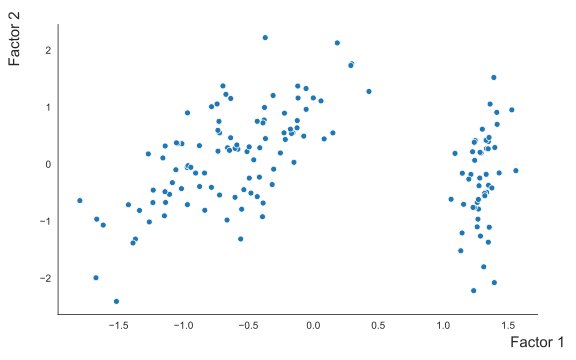

Dimension reduction¶
Here, we demonstrate how PyBDA can be used for dimension reduction. We use the iris data, because we know how we want the different plants to be clustered. We’ll use PCA, factor analysis and LDA for the dimension reduction and embed it into a two-dimensional space.
We activate our environment first:
[1]:
source ~/miniconda3/bin/activate pybda
(pybda)
We already provided an example how dimension reduction can be used in the data folder. It is fairly simple:
[2]:
cd data
(pybda)
[3]:
cat pybda-usecase-dimred.config
spark: spark-submit
infile: iris.tsv
outfolder: results
meta: iris_meta_columns.tsv
features: iris_feature_columns.tsv
dimension_reduction: pca, factor_analysis, lda
n_components: 2
response: Species
sparkparams:
- "--driver-memory=1G"
- "--executor-memory=1G"
debug: true
(pybda)
In the config above we will do the following:
do three dimensionality reductions to two dimensions on the features in
iris_feature_columns.tsv,for the LDA use the response variable
Species,give the Spark driver 1G of memory and the executor 1G of memory,
write the results to
results,print debug information.
As can be seen, the effort to implement the three embedings is minimal.
We execute PyBDA like this:
[4]:
pybda dimension-reduction pybda-usecase-dimred.config local
Checking command line arguments for method: dimension_reduction
Printing rule tree:
-> _ (, iris.tsv)
-> dimension_reduction (iris.tsv, results/2019_08_09/lda_from_iris.tsv)
-> dimension_reduction (iris.tsv, results/2019_08_09/factor_analysis_from_iris.tsv)
-> dimension_reduction (iris.tsv, results/2019_08_09/pca_from_iris.tsv)
Building DAG of jobs...
[2019-08-09 00:12:43,789 - WARNING - snakemake.logging]: Building DAG of jobs...
Using shell: /bin/bash
[2019-08-09 00:12:43,800 - WARNING - snakemake.logging]: Using shell: /bin/bash
Provided cores: 1
[2019-08-09 00:12:43,801 - WARNING - snakemake.logging]: Provided cores: 1
Rules claiming more threads will be scaled down.
[2019-08-09 00:12:43,801 - WARNING - snakemake.logging]: Rules claiming more threads will be scaled down.
Job counts:
count jobs
1 factor_analysis
1 lda
1 pca
3
[2019-08-09 00:12:43,801 - WARNING - snakemake.logging]: Job counts:
count jobs
1 factor_analysis
1 lda
1 pca
3
[2019-08-09 00:12:43,802 - INFO - snakemake.logging]:
[Fri Aug 9 00:12:43 2019]
[2019-08-09 00:12:43,802 - INFO - snakemake.logging]: [Fri Aug 9 00:12:43 2019]
rule pca:
input: iris.tsv
output: results/2019_08_09/pca_from_iris.tsv, results/2019_08_09/pca_from_iris-loadings.tsv, results/2019_08_09/pca_from_iris-plot
jobid: 0
[2019-08-09 00:12:43,802 - INFO - snakemake.logging]: rule pca:
input: iris.tsv
output: results/2019_08_09/pca_from_iris.tsv, results/2019_08_09/pca_from_iris-loadings.tsv, results/2019_08_09/pca_from_iris-plot
jobid: 0
[2019-08-09 00:12:43,802 - INFO - snakemake.logging]:
Printing rule tree:
-> _ (, iris.tsv)
-> dimension_reduction (iris.tsv, results/2019_08_09/lda_from_iris.tsv)
-> dimension_reduction (iris.tsv, results/2019_08_09/factor_analysis_from_iris.tsv)
-> dimension_reduction (iris.tsv, results/2019_08_09/pca_from_iris.tsv)
Job counts:
count jobs
1 pca
1
Submitting job spark-submit --master local --driver-memory=1G --executor-memory=1G /home/simon/PROJECTS/pybda/pybda/pca.py 2 iris.tsv iris_feature_columns.tsv results/2019_08_09/pca_from_iris > results/2019_08_09/pca_from_iris-spark.log 0m
[Fri Aug 9 00:13:25 2019]
[2019-08-09 00:13:25,029 - INFO - snakemake.logging]: [Fri Aug 9 00:13:25 2019]
Finished job 0.
[2019-08-09 00:13:25,030 - INFO - snakemake.logging]: Finished job 0.
1 of 3 steps (33%) done
[2019-08-09 00:13:25,030 - INFO - snakemake.logging]: 1 of 3 steps (33%) done
[2019-08-09 00:13:25,030 - INFO - snakemake.logging]:
[Fri Aug 9 00:13:25 2019]
[2019-08-09 00:13:25,030 - INFO - snakemake.logging]: [Fri Aug 9 00:13:25 2019]
rule factor_analysis:
input: iris.tsv
output: results/2019_08_09/factor_analysis_from_iris.tsv, results/2019_08_09/factor_analysis_from_iris-loadings.tsv, results/2019_08_09/factor_analysis_from_iris-loglik.tsv, results/2019_08_09/factor_analysis_from_iris-plot
jobid: 1
[2019-08-09 00:13:25,030 - INFO - snakemake.logging]: rule factor_analysis:
input: iris.tsv
output: results/2019_08_09/factor_analysis_from_iris.tsv, results/2019_08_09/factor_analysis_from_iris-loadings.tsv, results/2019_08_09/factor_analysis_from_iris-loglik.tsv, results/2019_08_09/factor_analysis_from_iris-plot
jobid: 1
[2019-08-09 00:13:25,030 - INFO - snakemake.logging]:
Printing rule tree:
-> _ (, iris.tsv)
-> dimension_reduction (iris.tsv, results/2019_08_09/lda_from_iris.tsv)
-> dimension_reduction (iris.tsv, results/2019_08_09/factor_analysis_from_iris.tsv)
-> dimension_reduction (iris.tsv, results/2019_08_09/pca_from_iris.tsv)
Job counts:
count jobs
1 factor_analysis
1
Submitting job spark-submit --master local --driver-memory=1G --executor-memory=1G /home/simon/PROJECTS/pybda/pybda/factor_analysis.py 2 iris.tsv iris_feature_columns.tsv results/2019_08_09/factor_analysis_from_iris > results/2019_08_09/factor_analysis_from_iris-spark.log 0m
[Fri Aug 9 00:14:23 2019]
[2019-08-09 00:14:23,030 - INFO - snakemake.logging]: [Fri Aug 9 00:14:23 2019]
Finished job 1.
[2019-08-09 00:14:23,030 - INFO - snakemake.logging]: Finished job 1.
2 of 3 steps (67%) done
[2019-08-09 00:14:23,030 - INFO - snakemake.logging]: 2 of 3 steps (67%) done
[2019-08-09 00:14:23,031 - INFO - snakemake.logging]:
[Fri Aug 9 00:14:23 2019]
[2019-08-09 00:14:23,031 - INFO - snakemake.logging]: [Fri Aug 9 00:14:23 2019]
rule lda:
input: iris.tsv
output: results/2019_08_09/lda.tsv, results/2019_08_09/lda-projection.tsv, results/2019_08_09/lda-plot
jobid: 2
[2019-08-09 00:14:23,031 - INFO - snakemake.logging]: rule lda:
input: iris.tsv
output: results/2019_08_09/lda.tsv, results/2019_08_09/lda-projection.tsv, results/2019_08_09/lda-plot
jobid: 2
[2019-08-09 00:14:23,031 - INFO - snakemake.logging]:
Printing rule tree:
-> _ (, iris.tsv)
-> dimension_reduction (iris.tsv, results/2019_08_09/lda_from_iris.tsv)
-> dimension_reduction (iris.tsv, results/2019_08_09/factor_analysis_from_iris.tsv)
-> dimension_reduction (iris.tsv, results/2019_08_09/pca_from_iris.tsv)
Job counts:
count jobs
1 lda
1
Submitting job spark-submit --master local --driver-memory=1G --executor-memory=1G /home/simon/PROJECTS/pybda/pybda/lda.py 2 iris.tsv iris_feature_columns.tsv Species results/2019_08_09/lda > results/2019_08_09/lda-spark.log 0m
[Fri Aug 9 00:15:09 2019]
[2019-08-09 00:15:09,943 - INFO - snakemake.logging]: [Fri Aug 9 00:15:09 2019]
Finished job 2.
[2019-08-09 00:15:09,943 - INFO - snakemake.logging]: Finished job 2.
3 of 3 steps (100%) done
[2019-08-09 00:15:09,943 - INFO - snakemake.logging]: 3 of 3 steps (100%) done
Complete log: /home/simon/PROJECTS/pybda/data/.snakemake/log/2019-08-09T001243.730838.snakemake.log
[2019-08-09 00:15:09,944 - WARNING - snakemake.logging]: Complete log: /home/simon/PROJECTS/pybda/data/.snakemake/log/2019-08-09T001243.730838.snakemake.log
(pybda)
After the three methods ran, we should check the plots and statistics. Let’s see what we got:
[5]:
cd results
ls -lgG *
(pybda) total 852
-rw-rw-r-- 1 190 Aug 9 00:14 factor_analysis_from_iris-loadings.tsv
-rw-rw-r-- 1 4882 Aug 9 00:14 factor_analysis_from_iris.log
-rw-rw-r-- 1 483 Aug 9 00:14 factor_analysis_from_iris-loglik.tsv
drwxrwxr-x 2 4096 Aug 9 00:14 factor_analysis_from_iris-plot
-rw-rw-r-- 1 319484 Aug 9 00:14 factor_analysis_from_iris-spark.log
-rw-r--r-- 1 12780 Aug 9 00:14 factor_analysis_from_iris.tsv
-rw-rw-r-- 1 2812 Aug 9 00:15 lda.log
drwxrwxr-x 2 4096 Aug 9 00:15 lda-plot
-rw-rw-r-- 1 346 Aug 9 00:15 lda-projection.tsv
-rw-rw-r-- 1 345011 Aug 9 00:15 lda-spark.log
-rw-r--r-- 1 12541 Aug 9 00:15 lda.tsv
-rw-rw-r-- 1 348 Aug 9 00:13 pca_from_iris-loadings.tsv
-rw-rw-r-- 1 2987 Aug 9 00:13 pca_from_iris.log
drwxrwxr-x 2 4096 Aug 9 00:13 pca_from_iris-plot
-rw-rw-r-- 1 107912 Aug 9 00:13 pca_from_iris-spark.log
-rw-r--r-- 1 12749 Aug 9 00:13 pca_from_iris.tsv
(pybda)
It should be interesting to look at the different embeddings (since we cannot open them from the command line, we load pre-computed plots).
First, the embedding of the PCA:
The embedding of the factor analysis:

Finally, the embedding of the LDA. Since, LDA needs a response variable to work, when we create a plot, we include this info:
PyBDA creates many other files and plots. It is, for instance, always important to look at log files:
[6]:
head */pca_from_iris.log
[2019-08-09 00:12:46,861 - INFO - pybda.spark_session]: Initializing pyspark session
[2019-08-09 00:12:48,092 - INFO - pybda.spark_session]: Config: spark.master, value: local
[2019-08-09 00:12:48,093 - INFO - pybda.spark_session]: Config: spark.driver.memory, value: 1G
[2019-08-09 00:12:48,093 - INFO - pybda.spark_session]: Config: spark.rdd.compress, value: True
[2019-08-09 00:12:48,093 - INFO - pybda.spark_session]: Config: spark.serializer.objectStreamReset, value: 100
[2019-08-09 00:12:48,093 - INFO - pybda.spark_session]: Config: spark.driver.host, value: 192.168.1.33
[2019-08-09 00:12:48,093 - INFO - pybda.spark_session]: Config: spark.executor.id, value: driver
[2019-08-09 00:12:48,093 - INFO - pybda.spark_session]: Config: spark.submit.deployMode, value: client
[2019-08-09 00:12:48,093 - INFO - pybda.spark_session]: Config: spark.app.name, value: pca.py
[2019-08-09 00:12:48,093 - INFO - pybda.spark_session]: Config: spark.driver.port, value: 37579
(pybda)
Furthermore, the Spark log file is sometimes important to look at when the methods failed:
[7]:
head */pca_from_iris-spark.log
2019-08-09 00:12:44 WARN Utils:66 - Your hostname, hoto resolves to a loopback address: 127.0.1.1; using 192.168.1.33 instead (on interface wlp2s0)
2019-08-09 00:12:44 WARN Utils:66 - Set SPARK_LOCAL_IP if you need to bind to another address
2019-08-09 00:12:45 WARN NativeCodeLoader:62 - Unable to load native-hadoop library for your platform... using builtin-java classes where applicable
2019-08-09 00:12:46 INFO SparkContext:54 - Running Spark version 2.4.0
2019-08-09 00:12:46 INFO SparkContext:54 - Submitted application: pca.py
2019-08-09 00:12:46 INFO SecurityManager:54 - Changing view acls to: simon
2019-08-09 00:12:46 INFO SecurityManager:54 - Changing modify acls to: simon
2019-08-09 00:12:46 INFO SecurityManager:54 - Changing view acls groups to:
2019-08-09 00:12:46 INFO SecurityManager:54 - Changing modify acls groups to:
2019-08-09 00:12:46 INFO SecurityManager:54 - SecurityManager: authentication disabled; ui acls disabled; users with view permissions: Set(simon); groups with view permissions: Set(); users with modify permissions: Set(simon); groups with modify permissions: Set()
(pybda)